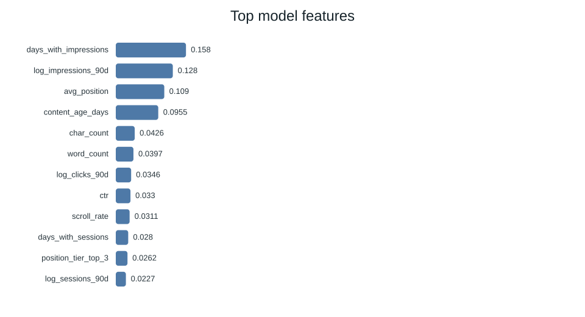

Abstract
1. Question
The research question is:
The work informs the decision of which content/query pairs to prioritize for revision based on secondary signals including click-through-rate change and position change.
The model provides a ranked list of potential edits with reason codes for human governance. It does not claim that a particular content change will necessarily produce improved search performance.
2. Data
The analysis uses the FlyRank ML Internship dataset, specifically the
fact_content_query_90d table and its 90-day
search-performance observations.
The analysis uses recent and previous 30-day performance signals, including impressions, clicks, average position, CTR and changes in performance across the observation windows.
The final feature set excludes irrelevant and redundant fields while retaining the signals required for the modeling and validation process. Records are represented using anonymized client, content and query identifiers.
Client names, private URLs and search queries are not exposed in this public-facing research artifact. The work is presented as an analytical and decision-support study.
3. Methodology
Assumptions
Search-performance signals are treated as indicators for potential content-review action. The recommendations are evidence-based suggestions and are not estimates of causal impact.
Features
The model uses available search-performance signals including impressions, clicks, average position, recent and previous period performance, CTR and changes in CTR or position.
Label Definition
The target follows the Week-5 modeling definition used during the internship workflow. The target is used to prioritize opportunities for action and does not imply that an intervention will necessarily improve future performance.
Baseline
A rules-based baseline is used for comparison. Model performance is evaluated against this baseline using the same evaluation framework.
Validation Design
Validation uses a client-holdout design rather than a purely random row-wise split. This provides a more realistic evaluation of how the approach may perform across separated groups of records.
Leakage Checks
The analytical feature set was checked for temporal leakage. Features that would require future information or information generated from the label were excluded or identified during the validation audit.
Interpretation
Results are interpreted as evidence for prioritizing content-review opportunities. The model is not treated as an automated decision-maker and does not guarantee future performance improvement.
4. Results (vs Baseline)
The random forest was selected as the best-performing model according to Precision@50 on the client-holdout validation split.
| Model | ROC AUC | Avg Precision | Precision@50 | Recall | F1 |
|---|---|---|---|---|---|
| Decision Tree | 0.742 | 0.575 | 0.540 | 0.716 | 0.634 |
| Logistic Regression | 0.700 | 0.522 | 0.400 | 0.567 | 0.566 |
| Random Forest | 0.750 | 0.618 | 0.740 | 0.744 | 0.640 |
| Baseline Rules | 0.627 | 0.468 | 0.240 | — | — |
The main measured result is that the random forest ranks better than the rules-based baseline on Precision@50 under the client-holdout evaluation. This supports its use as a potential review-prioritization tool, while not establishing that recommended interventions will improve search performance.
5. Limitations & Honest Framing
- The model provides prioritization signals rather than causal estimates of the effect of content changes.
- A high model score does not guarantee that refreshing a page will improve future search performance.
- The ranked queue should therefore be reviewed by humans before editorial or production action is taken.
- The evaluation measures model-ranking performance against the defined target and baseline; it does not measure downstream business impact.
- The public artifact uses anonymized data and does not expose private client names, URLs or search queries.
6. Ranked Recommendations
The final queue converts model signals into practical actions for human reviewers.
Prioritize high-confidence items showing declining demand and visible CTR-related opportunities. Human reviewers should inspect the page before deciding on changes.
Items with model decline risk and visible opportunity can be prioritized for content review and potential refresh.
Where engagement signals indicate a potential issue, reviewers can investigate the page before selecting an appropriate intervention.
Lower-confidence recommendations should be treated as monitoring candidates rather than immediate automated actions.
Final Queue Summary
| Category | Count |
|---|---|
| High confidence | 3,605 |
| Medium confidence | 11,395 |
| Low confidence | 15,000 |
| Monitor | 13,093 |
| Refresh | 8,178 |
| Refresh + review CTR | 6,657 |
| Refresh + review engagement | 1,990 |
| Expand + refresh | 82 |
Top Model Features
| Feature | Importance |
|---|---|
| days_with_impressions | 0.1578 |
| log_impressions_90d | 0.1282 |
| avg_position | 0.1090 |
| content_age_days | 0.0955 |
| char_count | 0.0426 |
| word_count | 0.0397 |
| log_clicks_90d | 0.0346 |
| ctr | 0.0330 |
| scroll_rate | 0.0311 |
| days_with_sessions | 0.0280 |
7. Artifacts the Paper Embeds
The research includes validation results, decision-support charts, feature-importance analysis, reason-code analysis, trend distribution and a ranked queue sample.
Action Mix

Confidence Mix

Top Feature Importance

Top Reason Codes

Trend Distribution

Supporting artifacts include the model report and a sample of the ranked recommendation queue. The public artifacts are intended to support interpretation and reproducibility while keeping private client information, URLs and queries out of the public page.
8. Reproducibility
The analysis is reproducible from the project repository. The capstone notebook documents the research question, data, methodology, results, limitations, ranked recommendations and supporting artifacts.
Repository:
github.com/alsa-mirza/flyrank-ml-internship
Capstone notebook:
work/notebooks/capstone.ipynb
9. Acknowledgments & Data Credit
This work was completed as part of the FlyRank ML Internship.
Built on the FlyRank ML Internship dataset.
Data source: FlyRank